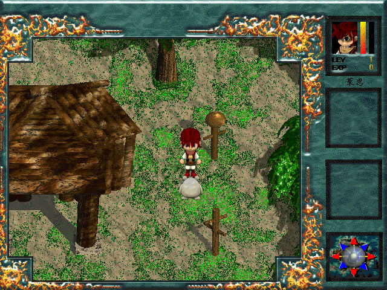
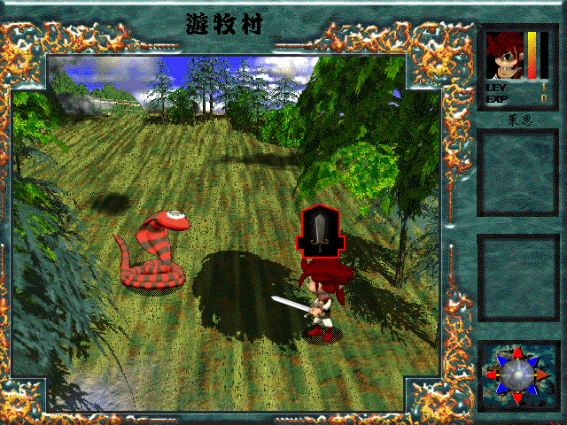

名稱：獅王傳說 (Jeonsa Ryan: The Last Warrior，中文版)
簡介：韓國Mirinae 1997年出品的角色扮演遊戲，由SICC代理發行，以3D斜角畫面呈現，採
團隊回合制方式戰鬥。1998年由富峰群中文化並代理發行 [待補]。


保護：無（放入光碟才有動畫）
備註：遊戲執行後，若另外跳出視窗播放動畫，請搭配DxWnd以視窗模式執行，或不放光碟以
略過動畫播放。
備註：VirtualBox的執行速度會過快，虛擬機建議使用VMware，或使用PCem+Win9x系統。